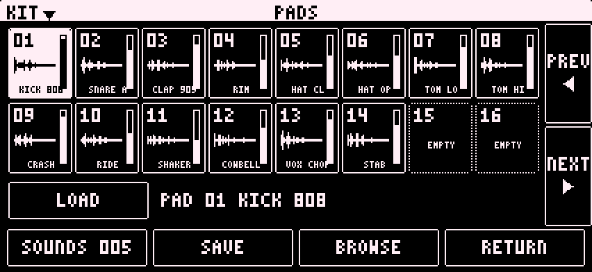
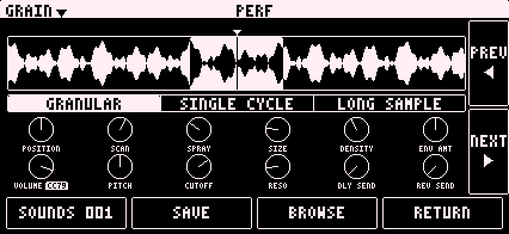
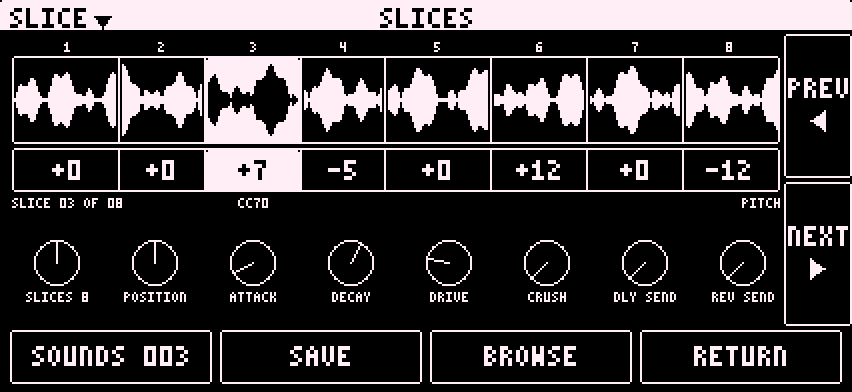

The Sampler is one engine with four machines: KIT, GRAIN, STRETCH and SLICE. Every machine has a filter, an amp envelope and DLY SEND and REV SEND. Notes play the sampler. There is no sequencing.
Switching discards whatever was loaded. A machine change silences the part.

Pages in each machine, turned with PREV and NEXT:
| Machine | Pages |
|---|---|
| KIT | PADS, FILTER, AMP |
| GRAIN | PERF, FILTER, AMP, SAMPLE |
| STRETCH | PERF, FILTER, AMP, SAMPLE |
| SLICE | SLICES, FILTER, AMP, MODE, SAMPLE |
FILTER: FILTER TYPE (MOOG or CCCP), CUTOFF, RESO, ENV AMT, and the filter envelope A, D, S, R. AMP: VOLUME, DLY SEND, REV SEND, the amp envelope A, D, S, R and a COLOR button. The sample browser loads samples. Memory and length limits: [TODO: sample length limits]
COLOR opens from the AMP page. On SLICE it also opens from the MODE page.
SP: grit and ring when pitched down. S950: darker and smoother. CRUSH: free bit depth (BITS 2 to 16) and sample rate (RATE 1 to 48 kHz). BITS and RATE only work on CRUSH.
COLOR only works where the sample is read plainly: KIT, GRAIN in LONG SAMPLE, SLICE in PITCH. Elsewhere it is greyed out.
A drum kit of 16 pads. Notes play pads. Set KB FOLD on (Digitakt OS 1.40 or later). Then key 1 plays pad 1 and key 16 plays pad 16. [TODO: the note each key sends]

Load a pad:
Tap a loaded pad to select and play it. Drag on a pad to set its level. LOAD swaps the selected pad's sample. Tap the PAD 01 line to open the pad page.
The pad page: waveform with START and LENGTH; direction FWD, BCK, LOOP FWD or LOOP BCK; dials TUNE, LEVEL, START, LENGTH, ATTACK, DECAY, CRUSH, DRIVE; buttons PLAY, LOAD, PADS. PREV and NEXT step through the pads.
The kit shares one filter. ENV RESET on: every hit restarts the filter envelope. Off: it carries on across hits. [TODO: where KIT's ENV RESET switch is]
KIT voices play each pad's own ATTACK and DECAY. The AMP page ADSR is not played by KIT. [TODO: whether KIT's AMP envelope will act or go]
A pad hit again starts over. Four notes can be held and eight voices can sound.
PERF has a mode selector: GRANULAR, SINGLE CYCLE, LONG SAMPLE. Switching mode silences the part.

Dials, row 1: POSITION, SCAN, SPRAY, SIZE, DENSITY, ENV AMT. Row 2: VOLUME, PITCH, CUTOFF, RESO, DLY SEND, REV SEND. In LONG SAMPLE, row 1 is POSITION, START, END, SIZE, DENSITY, ENV AMT.
| Mode | What it does | Live dials |
|---|---|---|
| GRANULAR | Plays the sample as grains. | All |
| SINGLE CYCLE | POSITION picks one cycle of the sample and loops it. The note sets the pitch: A4 plays 440 Hz. PITCH offsets it. | POSITION, ENV AMT, PITCH |
| LONG SAMPLE | Plays the sample plainly from START to END. A note plays from START and stops at END. | START, END, ENV AMT |
SCAN moves the read position through the sample. SPRAY gives each grain a random offset around it. In GRANULAR the waveform shows both.
Greyed dials do not respond. COLOR on the AMP page works only in LONG SAMPLE.
STRETCH stretches a loaded sample to the beat, in whole bars, and keeps the pitch.
Dials: START, END, STRETCH, PITCH, then VOLUME, CUTOFF, RESO, DLY SEND, REV SEND. The note pitches the grains.
[TODO: how the sample sounds and its limits]
SLICE cuts a sample into 4, 8 or 16 equal slices. Each slice plays on its own MIDI note, in order, like KIT. Key N plays slice N. [TODO: the note each key sends]

The drawing shows DLY SEND and REV SEND dials on this page. The app does not have them.
The amount is in whole semitones in PITCH and PITCHSHIFT. It is a percent in TIMESTRETCH.
The MODE page picks one mode for the whole machine:
| Mode | What it does |
|---|---|
| PITCH | Plain repitch. A slice pitched up plays faster and shorter. |
| PITCHSHIFT | Changes the pitch and keeps the length. |
| TIMESTRETCH | Changes the length and keeps the pitch. |
ENV RESET on: every hit restarts the filter envelope. Off: it carries on across hits. COLOR opens only in PITCH.
There is no transient detection. Slice order follows key order. Where two markers meet, the earlier slice is empty and plays nothing.